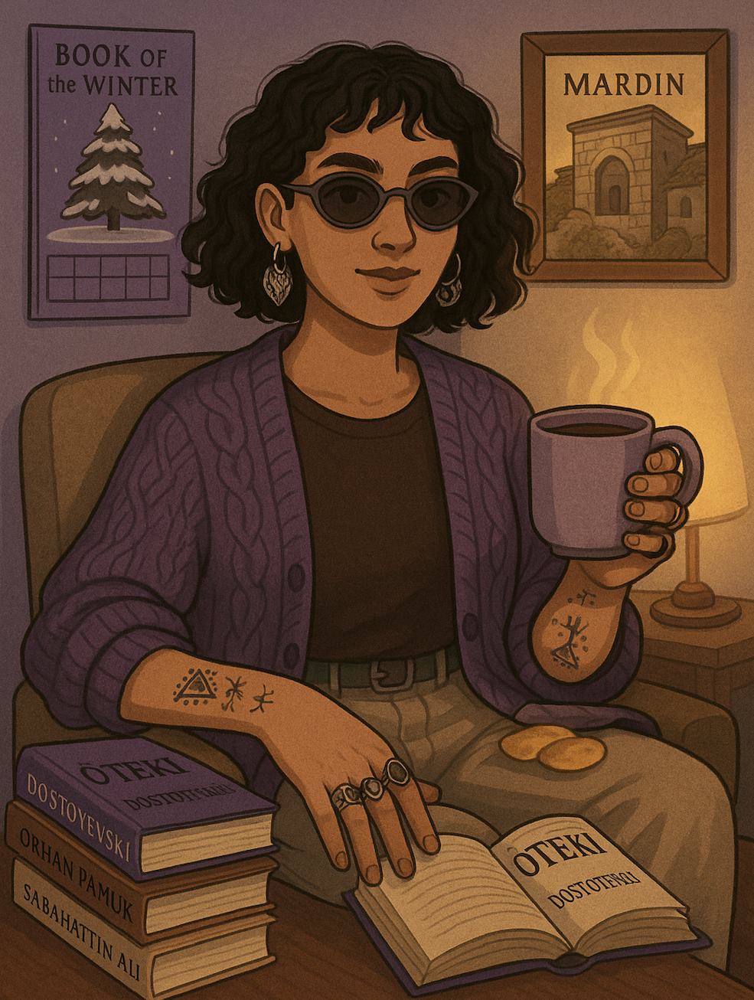

Nurcan Geçer
Sociologist
nrcn.gcr@gmail.com
About Me
I am a sociologist with an interdisciplinary perspective, focusing on social dynamics and cultural heritage.
I prioritize detailed research and analysis, driven by a passion for creating and sharing knowledge through creative approaches.
Education
- Free University of Berlin – Interdisciplinary Studies of the Middle East (Master, 2024 - ongoing)
- İstanbul Bilgi University – Psychology (Minor, 2019-2023)
- İstanbul Bilgi University – Sociology (Major, 2019-2023)
Skills & Languages
- Kurdish (Native), Turkish (Native), English (Advanced), German (Beginner), Spanish (Beginner),
- Project Writing and Management
- Microsoft Office & Google Workspace, GitHub, VS Code , SPSS
- GitHub, VS Code, HTML, JavaScript